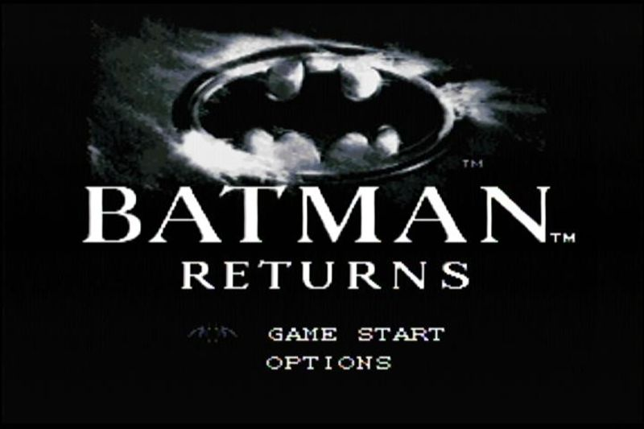

バットマン リターンズ Batman Returns
Пиратский картридж опять таки классика картриджей Денди, но всё таки почему липа:1) Нет никаких опознавательных знаков на коробке, которые говорили бы что это игра для Super NES/Famicom.
2) Картинка оригинальная и название написано поверх другим шрифтом.
3) Отсутствие значков качества и на коробке и на картридже.
4) Выемки на задней части картриджа вместо отверстий.
5) Другие предупреждающие клейма.
6) Плата картриджа, использующая микросхему без корпуса.
Вообще достаточно очевидно, что подпольный картридж, но очень получился красивым, что не говори.
В России подобный картридж встречался нечасто, но продавался и в виде картриджа и в виде полноценного издания.
Поначалу в нашем распоряжении был только картридж, однако теперь имеется полнокомплектный вариант этого издания.
Коробка этого издания является копией коробки Super Famicom издания игры - для Японии, с обрезанными логотипами и надписями, однако в целом практически идентична, главное отличие от оригинала в том, что картинка на картридже совершенно другая.
Интересным является то, что картинка используемая на картридже также ходила на пиратских картриджах Бэтмана на Денди, так что картинка и там и тут используется. Как оказалось она взята с тыльной стороны коробки Super Famicom издания.
Судя по наклейке на корпусе другого картриджа этой же пиратки, без коробки и холдера - вероятно мог распространяться какой-то частной фирмой - верхние цифры явно номера комнат или кабинетов, а а нижние - время работы. Но что за фирма и когда был продан по такому малому кол-ву информации пока сказать не можем.
Игра на деле представляет из себя игру по второму фильму Тима Бёртона про Бэтмана от Конами. Игра в жанре битемапа - она очень хороша, и как просто игра и как игра неплохо следующая оригинальному фильму, стоит поиграть.
Картридж выпущен не раньше марта-апреля 1993 года.
Игра внутри: Batman Returns.
Дополнительные фото и описание к ним: